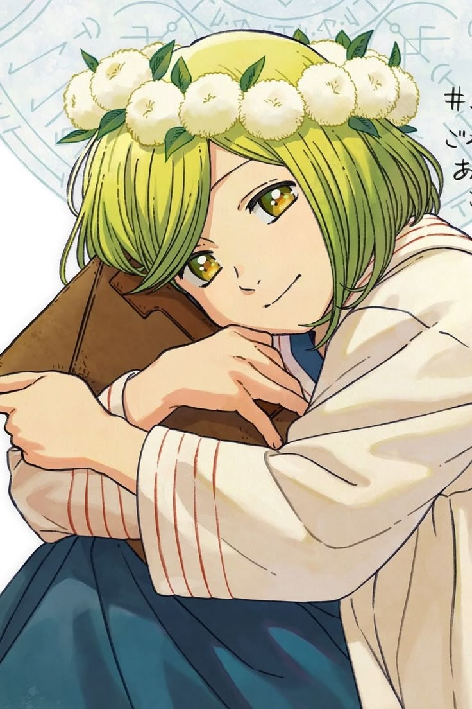
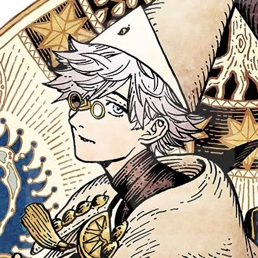
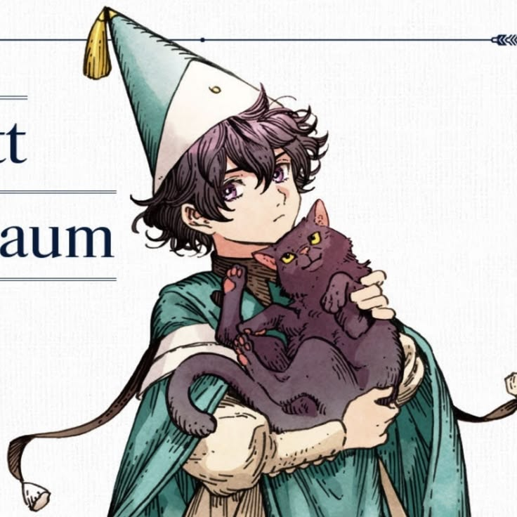
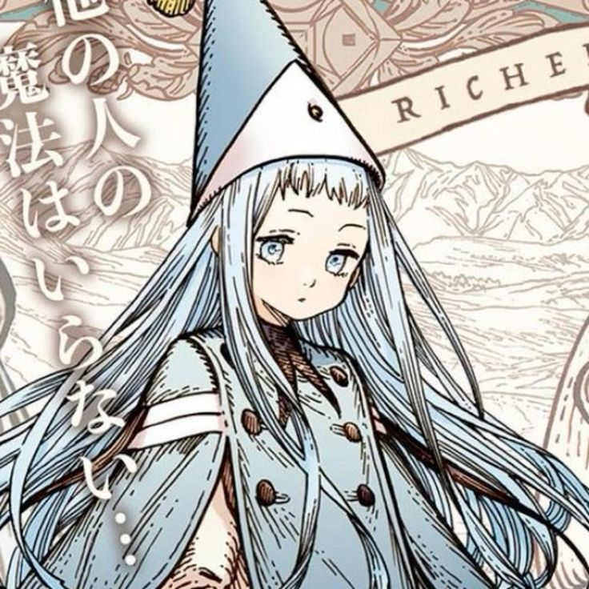
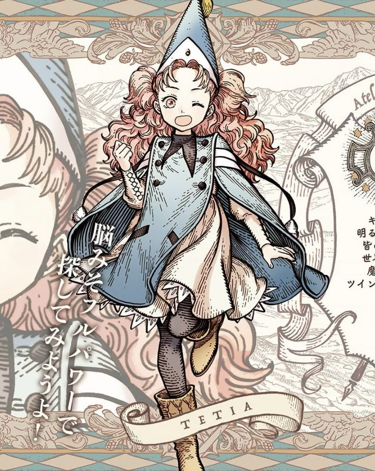

Coco

Coco es una joven fascinada por la magia desde pequeña. Su vida cambia cuando descubre accidentalmente el verdadero secreto detrás de los hechizos y comienza su aprendizaje bajo la tutela de Qifrey.
Conoce a los integrantes del Atelier

Coco es una joven fascinada por la magia desde pequeña. Su vida cambia cuando descubre accidentalmente el verdadero secreto detrás de los hechizos y comienza su aprendizaje bajo la tutela de Qifrey.

Qifrey es un mago y maestro que recibe a Coco como su aprendiz. Es amable y misterioso, y posee sus propios motivos para investigar los secretos de la magia.

Agott es una de las aprendices de Qifrey. Es talentosa, disciplinada y exigente consigo misma. Al principio mantiene una relación complicada con Coco.

Richeh es una de las aprendices del atelier. Tiene una personalidad independiente y creativa, y prefiere experimentar con la magia siguiendo sus propias ideas.

Tetia es otra de las aprendices de Qifrey. Se caracteriza por tener una personalidad alegre, entusiasta y amigable.